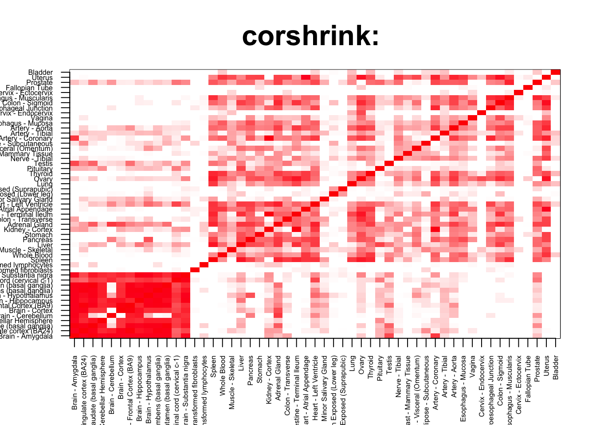

Median corr brain/non brain vs non-brain/non-brain
tab <- array(0, dim(corshrink_data)[3])
for(m in 1:dim(corshrink_data)[3]){
temp <- corshrink_data[order_index[1:13], order_index[(1:13)],m]
temp1 <- corshrink_data[order_index[(1:13)], order_index[-(1:13)],m]
tab[m] <- (quantile(temp[row(temp) > col(temp)], 0.6)) - (quantile(temp1, 0.6))
}
ordering_high <- order(tab, decreasing = TRUE)[1:1000]
ordering_low <- order(tab, decreasing = FALSE)[1:1000]top_gene <- gene_names_1[ordering_high[1]]
col=c(rev(rgb(seq(1,0,length=1000),1,seq(1,0,length=1000))),
rgb(1,seq(1,0,length=1000),seq(1,0,length=1000)))
image(as.matrix(corshrink_data[order_index,order_index, ordering_high[1]]),
col=col, main=paste0("corshrink: "), cex.main=2,
xaxt = "n", yaxt = "n", zlim=c(-1,1))
axis(1, at = seq(0, 1, length.out = 53), labels = U[order_index], las=2, cex.axis = 0.5)
axis(2, at = seq(0, 1, length.out = 53), labels = U[order_index], las=2, cex.axis = 0.5)
bottom_gene <- gene_names_1[ordering_low[1]]
col=c(rev(rgb(seq(1,0,length=1000),1,seq(1,0,length=1000))),
rgb(1,seq(1,0,length=1000),seq(1,0,length=1000)))
image(as.matrix(corshrink_data[order_index,order_index, ordering_low[1]]),
col=col, main=paste0("corshrink: "), cex.main=2,
xaxt = "n", yaxt = "n", zlim=c(-1,1))
axis(1, at = seq(0, 1, length.out = 53), labels = U[order_index], las=2, cex.axis = 0.5)
axis(2, at = seq(0, 1, length.out = 53), labels = U[order_index], las=2, cex.axis = 0.5)
high_brain_other_tissues_genes <- gene_names_1[ordering_high]
low_brain_other_tissues_genes <- gene_names_1[ordering_low]
write.table(cbind.data.frame(high_brain_other_tissues_genes), quote = FALSE, file = "../utilities/brain_other_tissues/high_brain_other_tissues.txt", row.names = FALSE, col.names = FALSE)
write.table(cbind.data.frame(low_brain_other_tissues_genes), quote = FALSE, file = "../utilities/brain_other_tissues/low_brain_other_tissues.txt", row.names = FALSE, col.names = FALSE)Pathway analysis
tab <- read.delim("../utilities/brain_other_tissues/pathway_high.tab")
head(cbind.data.frame(tab$pathway, tab$q.value), 100)## tab$pathway
## 1 Spinal Cord Injury
## 2 TNF signaling pathway - Homo sapiens (human)
## 3 Validated transcriptional targets of AP1 family members Fra1 and Fra2
## 4 MAPK Signaling Pathway
## 5 Senescence and Autophagy in Cancer
## 6 Microglia Pathogen Phagocytosis Pathway
## 7 Pertussis - Homo sapiens (human)
## 8 Legionellosis - Homo sapiens (human)
## 9 Osteoclast differentiation - Homo sapiens (human)
## 10 AP-1 transcription factor network
## 11 VEGFA-VEGFR2 Signaling Pathway
## 12 Influenza A - Homo sapiens (human)
## 13 Immune System
## 14 AGE-RAGE signaling pathway in diabetic complications - Homo sapiens (human)
## 15 TYROBP Causal Network
## 16 Apoptosis - Homo sapiens (human)
## 17 Photodynamic therapy-induced unfolded protein response
## 18 TGF-beta Signaling Pathway
## 19 Innate Immune System
## 20 Tacrolimus/Cyclosporine Pathway, Pharmacodynamics
## 21 TGF_beta_Receptor
## 22 Direct p53 effectors
## 23 Regulation of toll-like receptor signaling pathway
## 24 MAPK signaling pathway - Homo sapiens (human)
## 25 ATF6-alpha activates chaperone genes
## 26 Leishmaniasis - Homo sapiens (human)
## 27 Neutrophil degranulation
## 28 Hepatitis C and Hepatocellular Carcinoma
## 29 Attenuation phase
## 30 Chagas disease (American trypanosomiasis) - Homo sapiens (human)
## 31 Complement and Coagulation Cascades
## 32 Dengue-2 Interactions with Complement and Coagulation Cascades
## 33 HSF1-dependent transactivation
## 34 Nuclear Receptors Meta-Pathway
## 35 Complement and coagulation cascades - Homo sapiens (human)
## 36 HSF1 activation
## 37 Non-alcoholic fatty liver disease (NAFLD) - Homo sapiens (human)
## 38 classical complement pathway
## 39 Herpes simplex infection - Homo sapiens (human)
## 40 Glucocorticoid receptor regulatory network
## 41 Phagosome - Homo sapiens (human)
## 42 Staphylococcus aureus infection - Homo sapiens (human)
## 43 IL6-mediated signaling events
## 44 Toll-like Receptor Signaling Pathway
## 45 HIF-1-alpha transcription factor network
## 46 Cellular response to heat stress
## 47 ATF4 activates genes
## 48 ATF-2 transcription factor network
## 49 Epstein-Barr virus infection - Homo sapiens (human)
## 50 DNA Damage Response (only ATM dependent)
## 51 Regulation of HSF1-mediated heat shock response
## 52 Hepatitis B - Homo sapiens (human)
## 53 Oncostatin_M
## 54 HTLV-I infection - Homo sapiens (human)
## 55 Toll-like receptor signaling pathway - Homo sapiens (human)
## 56 Apoptosis
## 57 Apoptotic Signaling Pathway
## 58 Oxidative Damage
## 59 Prolactin Signaling Pathway
## 60 AMP-activated Protein Kinase (AMPK) Signaling
## 61 Cellular responses to stress
## 62 Photodynamic therapy-induced AP-1 survival signaling.
## 63 Insulin resistance - Homo sapiens (human)
## 64 Macrophage markers
## 65 Validated targets of C-MYC transcriptional activation
## 66 Cellular response to heat stress
## 67 Prion diseases - Homo sapiens (human)
## 68 Apoptosis Modulation and Signaling
## 69 Apoptosis Modulation and Signaling
## 70 Apoptosis Modulation and Signaling
## 71 Apoptosis-related network due to altered Notch3 in ovarian cancer
## 72 HIF-1 signaling pathway - Homo sapiens (human)
## 73 Photodynamic therapy-induced HIF-1 survival signaling
## 74 TNF alpha Signaling Pathway
## 75 Antigen processing and presentation - Homo sapiens (human)
## 76 Mammary gland development pathway - Involution (Stage 4 of 4)
## 77 TP53 Regulates Transcription of Cell Death Genes
## 78 Type II interferon signaling (IFNG)
## 79 Complement Activation
## 80 Lung fibrosis
## 81 RANKL-RANK (Receptor activator of NFKB (ligand)) Signaling Pathway
## 82 IL-1 signaling pathway
## 83 Oncostatin M Signaling Pathway
## 84 Toxoplasmosis - Homo sapiens (human)
## 85 Toll-Like Receptors Cascades
## 86 signal transduction through il1r
## 87 Thymic Stromal LymphoPoietin (TSLP) Signaling Pathway
## 88 hypoxia and p53 in the cardiovascular system
## 89 Transcriptional misregulation in cancer - Homo sapiens (human)
## 90 Bladder Cancer
## 91 Central carbon metabolism in cancer - Homo sapiens (human)
## 92 Malaria - Homo sapiens (human)
## 93 Antigen processing-Cross presentation
## 94 Rheumatoid arthritis - Homo sapiens (human)
## 95 Toll Like Receptor 9 (TLR9) Cascade
## 96 p53 signaling pathway - Homo sapiens (human)
## 97 TNF related weak inducer of apoptosis (TWEAK) Signaling Pathway
## 98 Bladder cancer - Homo sapiens (human)
## 99 Allograft Rejection
## 100 Adipocytokine signaling pathway - Homo sapiens (human)
## tab$q.value
## 1 1.464524e-10
## 2 4.060029e-09
## 3 7.907537e-09
## 4 1.259683e-07
## 5 1.259683e-07
## 6 1.259683e-07
## 7 1.909636e-07
## 8 2.094187e-07
## 9 2.628644e-07
## 10 2.628644e-07
## 11 4.504199e-07
## 12 2.275988e-06
## 13 2.769689e-06
## 14 3.512593e-06
## 15 3.696487e-06
## 16 3.696487e-06
## 17 3.696487e-06
## 18 4.375865e-06
## 19 1.336986e-05
## 20 1.515075e-05
## 21 1.658405e-05
## 22 1.658405e-05
## 23 1.658405e-05
## 24 1.707391e-05
## 25 2.607395e-05
## 26 3.378961e-05
## 27 3.445424e-05
## 28 4.332080e-05
## 29 5.856980e-05
## 30 6.328766e-05
## 31 6.388419e-05
## 32 7.702433e-05
## 33 7.855223e-05
## 34 8.567631e-05
## 35 9.451993e-05
## 36 9.529227e-05
## 37 1.060565e-04
## 38 1.060565e-04
## 39 1.060565e-04
## 40 1.172359e-04
## 41 1.195398e-04
## 42 1.195398e-04
## 43 1.195398e-04
## 44 1.398129e-04
## 45 2.225942e-04
## 46 2.674257e-04
## 47 2.674257e-04
## 48 3.608266e-04
## 49 3.617995e-04
## 50 3.709280e-04
## 51 4.348829e-04
## 52 5.265656e-04
## 53 6.426745e-04
## 54 6.489727e-04
## 55 6.868739e-04
## 56 7.122549e-04
## 57 7.122549e-04
## 58 7.479662e-04
## 59 7.825880e-04
## 60 9.834090e-04
## 61 9.834090e-04
## 62 9.888170e-04
## 63 9.888170e-04
## 64 1.082174e-03
## 65 1.098803e-03
## 66 1.164094e-03
## 67 1.314839e-03
## 68 1.522025e-03
## 69 1.522025e-03
## 70 1.522025e-03
## 71 1.537671e-03
## 72 1.537671e-03
## 73 1.537671e-03
## 74 1.638120e-03
## 75 1.735623e-03
## 76 1.746789e-03
## 77 1.768703e-03
## 78 1.812828e-03
## 79 1.812828e-03
## 80 1.836046e-03
## 81 1.928231e-03
## 82 1.928231e-03
## 83 2.061772e-03
## 84 2.061772e-03
## 85 2.061772e-03
## 86 2.064184e-03
## 87 2.211603e-03
## 88 2.238131e-03
## 89 2.264179e-03
## 90 2.542646e-03
## 91 2.565741e-03
## 92 2.943182e-03
## 93 2.943182e-03
## 94 2.943182e-03
## 95 2.943182e-03
## 96 3.259616e-03
## 97 3.398765e-03
## 98 3.398765e-03
## 99 3.470583e-03
## 100 3.606304e-03GO analysis
tab <- read.delim("../utilities/brain_other_tissues/GO_high.tab")
head(cbind.data.frame(tab$term_name, tab$q.value), 100)## tab$term_name tab$q.value
## 1 response to stress 2.485399e-22
## 2 cell death 2.196099e-19
## 3 positive regulation of response to stimulus 9.112260e-18
## 4 programmed cell death 1.427613e-17
## 5 regulation of cell death 1.427613e-17
## 6 apoptotic process 4.725855e-17
## 7 regulation of programmed cell death 4.725855e-17
## 8 protein binding 6.439823e-18
## 9 membrane-bounded organelle 7.229905e-17
## 10 regulation of response to stimulus 6.148104e-16
## 11 negative regulation of biological process 2.139601e-15
## 12 positive regulation of biological process 2.139601e-15
## 13 positive regulation of cellular process 1.460451e-14
## 14 negative regulation of cellular process 5.097299e-14
## 15 cytoplasm 1.269186e-13
## 16 immune response 5.315051e-14
## 17 response to external stimulus 5.502325e-14
## 18 cellular response to stress 2.940322e-13
## 19 apoptotic signaling pathway 5.200298e-13
## 20 vesicle 9.768746e-13
## 21 regulation of response to stress 3.974224e-12
## 22 response to organic substance 1.862655e-12
## 23 positive regulation of signal transduction 9.501416e-12
## 24 extracellular exosome 6.059196e-12
## 25 intracellular part 1.381255e-12
## 26 defense response 2.943213e-12
## 27 intracellular 1.381255e-12
## 28 cellular response to chemical stimulus 2.981398e-12
## 29 extracellular vesicle 3.520467e-12
## 30 regulation of signal transduction 9.659715e-12
## 31 extracellular organelle 1.580529e-12
## 32 intracellular signal transduction 6.762561e-12
## 33 regulation of intracellular signal transduction 4.134993e-11
## 34 intracellular membrane-bounded organelle 7.214065e-12
## 35 positive regulation of immune system process 2.258941e-11
## 36 positive regulation of cell death 8.151710e-11
## 37 regulation of immune system process 3.530912e-11
## 38 regulation of cell communication 8.554414e-11
## 39 response to cytokine 8.554414e-11
## 40 positive regulation of cell communication 1.373536e-10
## 41 positive regulation of signaling 9.564610e-11
## 42 cytoplasmic part 3.431126e-11
## 43 regulation of signaling 5.511649e-11
## 44 response to biotic stimulus 7.035544e-11
## 45 negative regulation of response to stimulus 2.557710e-10
## 46 regulation of cellular protein metabolic process 5.168843e-10
## 47 immune effector process 1.022109e-10
## 48 regulation of protein metabolic process 6.715093e-10
## 49 cellular response to external stimulus 3.811056e-10
## 50 response to abiotic stimulus 1.782777e-10
## 51 negative regulation of cell death 2.295118e-09
## 52 blood vessel development 8.336549e-10
## 53 regulation of angiogenesis 3.018496e-09
## 54 angiogenesis 1.262834e-09
## 55 vasculature development 2.927846e-09
## 56 response to external biotic stimulus 1.685825e-09
## 57 response to other organism 3.617793e-09
## 58 response to extracellular stimulus 1.685825e-09
## 59 regulation of cytokine production 3.617793e-09
## 60 response to temperature stimulus 1.841680e-09
## 61 cardiovascular system development 3.952624e-09
## 62 cell proliferation 1.143313e-09
## 63 blood vessel morphogenesis 2.882444e-09
## 64 cellular response to organic substance 6.459607e-09
## 65 regulation of vasculature development 9.805633e-09
## 66 positive regulation of cellular metabolic process 9.805633e-09
## 67 response to oxidative stress 3.628051e-09
## 68 regulation of apoptotic signaling pathway 9.805633e-09
## 69 cellular response to cytokine stimulus 9.805633e-09
## 70 response to chemical 2.458794e-09
## 71 enzyme binding 3.066984e-08
## 72 cytokine production 5.288578e-09
## 73 intracellular organelle 3.896771e-09
## 74 response to lipopolysaccharide 1.362205e-08
## 75 regulation of cell proliferation 1.555351e-08
## 76 response to topologically incorrect protein 9.152815e-09
## 77 regulation of multicellular organismal process 9.923811e-09
## 78 response to nutrient levels 2.172019e-08
## 79 cell motility 5.232426e-09
## 80 localization of cell 5.232426e-09
## 81 regulation of immune response 2.463200e-08
## 82 positive regulation of metabolic process 3.988414e-08
## 83 positive regulation of macromolecule metabolic process 5.589999e-08
## 84 myeloid leukocyte activation 2.007158e-08
## 85 response to molecule of bacterial origin 4.126156e-08
## 86 regulation of cellular metabolic process 4.268659e-08
## 87 positive regulation of multicellular organismal process 4.495122e-08
## 88 inflammatory response 4.750637e-08
## 89 response to heat 3.012763e-08
## 90 extrinsic apoptotic signaling pathway 5.979546e-08
## 91 immune system development 1.635227e-08
## 92 cell migration 3.463079e-08
## 93 response to unfolded protein 6.327263e-08
## 94 positive regulation of cytokine production 1.052146e-07
## 95 regulation of molecular function 1.678645e-08
## 96 cellular response to stimulus 1.742912e-08
## 97 aging 4.127320e-08
## 98 nucleus 1.681761e-07
## 99 regulation of cellular process 4.481271e-08
## 100 cellular response to extracellular stimulus 4.529054e-08tab <- read.delim("../utilities/brain_other_tissues/pathway_low.tab")
head(cbind.data.frame(tab$pathway, tab$q.value), 100)## tab$pathway
## 1 Primary Focal Segmental Glomerulosclerosis FSGS
## 2 Dilated cardiomyopathy - Homo sapiens (human)
## 3 Keratinization
## 4 Arrhythmogenic right ventricular cardiomyopathy (ARVC) - Homo sapiens (human)
## 5 Phenylalanine degradation
## 6 Familial lipoprotein lipase deficiency
## 7 Glycerolipid Metabolism
## 8 Glycerol Kinase Deficiency
## 9 D-glyceric acidura
## 10 Arrhythmogenic Right Ventricular Cardiomyopathy
## 11 Antiarrhythmic Pathway, Pharmacodynamics
## 12 Tyrosine metabolism
## 13 Tyrosine metabolism - Homo sapiens (human)
## 14 Phenylalanine metabolism - Homo sapiens (human)
## 15 glycerol degradation
## 16 Procainamide (Antiarrhythmic) Action Pathway
## 17 Flecainide Action Pathway
## 18 Amiodarone Action Pathway
## 19 Ibutilide Action Pathway
## 20 Bopindolol Action Pathway
## 21 Timolol Action Pathway
## 22 Carteolol Action Pathway
## 23 Bevantolol Action Pathway
## 24 Practolol Action Pathway
## 25 Dobutamine Action Pathway
## 26 Isoprenaline Action Pathway
## 27 Arbutamine Action Pathway
## 28 Levobunolol Action Pathway
## 29 Metipranolol Action Pathway
## 30 Sotalol Action Pathway
## 31 Epinephrine Action Pathway
## 32 Betaxolol Action Pathway
## 33 Atenolol Action Pathway
## 34 Alprenolol Action Pathway
## 35 Acebutolol Action Pathway
## 36 Propranolol Action Pathway
## 37 Pindolol Action Pathway
## 38 Penbutolol Action Pathway
## 39 Oxprenolol Action Pathway
## 40 Metoprolol Action Pathway
## 41 Esmolol Action Pathway
## 42 Bisoprolol Action Pathway
## 43 Bupranolol Action Pathway
## 44 Nebivolol Action Pathway
## 45 Nadolol Action Pathway
## 46 Muscle/Heart Contraction
## 47 Diltiazem Action Pathway
## 48 Amlodipine Action Pathway
## 49 Verapamil Action Pathway
## 50 Nitrendipine Action Pathway
## 51 Nisoldipine Action Pathway
## 52 Nimodipine Action Pathway
## 53 Isradipine Action Pathway
## 54 Nifedipine Action Pathway
## 55 Felodipine Action Pathway
## 56 Quinidine Action Pathway
## 57 Disopyramide Action Pathway
## 58 Fosphenytoin (Antiarrhythmic) Action Pathway
## 59 Mexiletine Action Pathway
## 60 Tocainide Action Pathway
## 61 Developmental Biology
## 62 Carvedilol Action Pathway
## 63 Labetalol Action Pathway
## 64 Lidocaine (Antiarrhythmic) Action Pathway
## 65 Muscle contraction
## 66 Beta1 integrin cell surface interactions
## 67 Formation of the cornified envelope
## 68 Syndecan-1-mediated signaling events
## 69 Signaling by TGF-beta Receptor Complex in Cancer
## 70 Histidine degradation
## 71 Ifosfamide Action Pathway
## 72 Ifosfamide Metabolism Pathway
## 73 Hypothesized Pathways in Pathogenesis of Cardiovascular Disease
## 74 Cell adhesion molecules (CAMs) - Homo sapiens (human)
## 75 Cyclophosphamide Action Pathway
## 76 Cyclophosphamide Metabolism Pathway
## 77 retinoate biosynthesis I
## 78 Metabolism of ingested SeMet, Sec, MeSec into H2Se
## 79 Adrenergic signaling in cardiomyocytes - Homo sapiens (human)
## 80 Phenytoin (Antiarrhythmic) Action Pathway
## 81 Hypertrophic cardiomyopathy (HCM) - Homo sapiens (human)
## tab$q.value
## 1 0.007746062
## 2 0.019478008
## 3 0.019478008
## 4 0.019478008
## 5 0.019478008
## 6 0.019478008
## 7 0.019478008
## 8 0.019478008
## 9 0.019478008
## 10 0.019478008
## 11 0.019478008
## 12 0.019478008
## 13 0.019478008
## 14 0.019478008
## 15 0.019478008
## 16 0.019478008
## 17 0.019478008
## 18 0.019478008
## 19 0.019478008
## 20 0.019478008
## 21 0.019478008
## 22 0.019478008
## 23 0.019478008
## 24 0.019478008
## 25 0.019478008
## 26 0.019478008
## 27 0.019478008
## 28 0.019478008
## 29 0.019478008
## 30 0.019478008
## 31 0.019478008
## 32 0.019478008
## 33 0.019478008
## 34 0.019478008
## 35 0.019478008
## 36 0.019478008
## 37 0.019478008
## 38 0.019478008
## 39 0.019478008
## 40 0.019478008
## 41 0.019478008
## 42 0.019478008
## 43 0.019478008
## 44 0.019478008
## 45 0.019478008
## 46 0.019478008
## 47 0.019478008
## 48 0.019478008
## 49 0.019478008
## 50 0.019478008
## 51 0.019478008
## 52 0.019478008
## 53 0.019478008
## 54 0.019478008
## 55 0.019478008
## 56 0.019478008
## 57 0.019478008
## 58 0.019478008
## 59 0.019478008
## 60 0.019478008
## 61 0.019508996
## 62 0.019927230
## 63 0.019927230
## 64 0.021042481
## 65 0.024456867
## 66 0.026671533
## 67 0.031718049
## 68 0.031928693
## 69 0.031928693
## 70 0.034228063
## 71 0.040381208
## 72 0.040381208
## 73 0.041665089
## 74 0.043511215
## 75 0.047436228
## 76 0.047436228
## 77 0.047436228
## 78 0.047436228
## 79 0.050607745
## 80 0.051592088
## 81 0.053553764tab <- read.delim("../utilities/brain_other_tissues/GO_low.tab")
head(cbind.data.frame(tab$term_name, tab$q.value), 100)## tab$term_name
## 1 I band
## 2 contractile fiber part
## 3 contractile fiber
## 4 Z disc
## 5 sarcomere
## 6 actin filament-based process
## 7 myofibril
## 8 supramolecular polymer
## 9 supramolecular fiber
## 10 cytoskeletal protein binding
## 11 actin filament-based movement
## 12 cell-cell junction
## 13 extracellular exosome
## 14 actin-mediated cell contraction
## 15 cytoskeleton organization
## 16 extracellular vesicle
## 17 extracellular organelle
## 18 actomyosin structure organization
## 19 vesicle
## 20 anchoring junction
## 21 muscle structure development
## 22 adherens junction
## 23 actin binding
## 24 actin cytoskeleton organization
## 25 protein binding
## 26 cell-cell adherens junction
## 27 regulation of calcium ion binding
## 28 negative regulation of calcium ion binding
## 29 supramolecular fiber organization
## 30 G1 to G0 transition
## 31 actin cytoskeleton
## 32 fascia adherens
## 33 intermediate filament cytoskeleton organization
## 34 skin development
## 35 muscle system process
## 36 cytoskeleton
## 37 protein complex binding
## 38 intermediate filament-based process
## 39 cell-cell contact zone
## 40 basolateral plasma membrane
## 41 collagen type V trimer
## 42 cell adhesion molecule binding
## 43 heterophilic cell-cell adhesion via plasma membrane cell adhesion molecules
## 44 striated muscle tissue development
## 45 regulation of heart rate by cardiac conduction
## 46 channel regulator activity
## 47 heart trabecula formation
## 48 homotypic cell-cell adhesion
## 49 cell development
## 50 regulation of actin filament-based movement
## 51 muscle tissue development
## 52 myofibril assembly
## 53 cardiac muscle tissue morphogenesis
## 54 tissue development
## 55 extracellular matrix organization
## 56 protein phosphatase regulator activity
## 57 extracellular structure organization
## 58 epithelial cell differentiation
## 59 muscle contraction
## 60 cardiac chamber development
## 61 anatomical structure development
## 62 synaptonemal structure
## 63 single-organism developmental process
## 64 condensed nuclear chromosome
## 65 heart contraction
## 66 adherens junction organization
## 67 actin-based cell projection
## 68 heart process
## 69 regulation of heart rate
## 70 maternal process involved in female pregnancy
## 71 heart morphogenesis
## 72 keratinocyte proliferation
## 73 extracellular matrix component
## 74 epidermis development
## 75 protein phosphatase inhibitor activity
## 76 muscle tissue morphogenesis
## 77 anatomical structure morphogenesis
## 78 cell projection assembly
## 79 troponin I binding
## 80 adrenergic receptor signaling pathway involved in heart process
## 81 complex of collagen trimers
## 82 intermediate filament organization
## 83 organic cation transport
## 84 cell differentiation
## 85 trabecula morphogenesis
## 86 isoprenoid binding
## 87 phosphatase inhibitor activity
## 88 cellular developmental process
## 89 regulation of muscle system process
## 90 phosphatase regulator activity
## 91 tissue morphogenesis
## 92 muscle cell differentiation
## 93 regulation of cell projection organization
## 94 cytoskeletal part
## 95 cardiac conduction
## 96 response to hydrostatic pressure
## 97 alditol catabolic process
## 98 glycerol-3-phosphate metabolic process
## 99 elastic fiber assembly
## 100 transmembrane receptor protein tyrosine phosphatase signaling pathway
## tab$q.value
## 1 1.432564e-06
## 2 1.540973e-06
## 3 5.745003e-06
## 4 7.810627e-06
## 5 7.810627e-06
## 6 3.114852e-04
## 7 3.933711e-05
## 8 9.631638e-05
## 9 1.503732e-04
## 10 7.225184e-04
## 11 5.068229e-03
## 12 3.335072e-04
## 13 6.966385e-04
## 14 6.197095e-03
## 15 5.068229e-03
## 16 3.768454e-04
## 17 3.440696e-04
## 18 6.197095e-03
## 19 5.470896e-04
## 20 5.752109e-04
## 21 8.250498e-03
## 22 9.313734e-04
## 23 6.017659e-03
## 24 3.244032e-02
## 25 8.028206e-03
## 26 2.782047e-03
## 27 3.352816e-02
## 28 3.449089e-02
## 29 2.432443e-02
## 30 2.432443e-02
## 31 6.425136e-03
## 32 1.107288e-02
## 33 4.564073e-02
## 34 4.564073e-02
## 35 2.995673e-02
## 36 1.107288e-02
## 37 2.215857e-02
## 38 2.995673e-02
## 39 6.172174e-03
## 40 6.276856e-03
## 41 1.252476e-02
## 42 2.484755e-02
## 43 9.335786e-02
## 44 9.335786e-02
## 45 7.776003e-02
## 46 2.285921e-02
## 47 7.776003e-02
## 48 7.776003e-02
## 49 6.268099e-02
## 50 9.605137e-02
## 51 7.776003e-02
## 52 7.776003e-02
## 53 9.605137e-02
## 54 6.268099e-02
## 55 7.776003e-02
## 56 7.620418e-02
## 57 6.268099e-02
## 58 9.657142e-02
## 59 8.692927e-02
## 60 6.737250e-02
## 61 8.589118e-02
## 62 2.347940e-02
## 63 8.589118e-02
## 64 2.347940e-02
## 65 1.042435e-01
## 66 1.042435e-01
## 67 2.347580e-02
## 68 9.714952e-02
## 69 7.342010e-02
## 70 7.342010e-02
## 71 9.714952e-02
## 72 9.714952e-02
## 73 3.570195e-02
## 74 9.714952e-02
## 75 1.275847e-01
## 76 9.866055e-02
## 77 8.959470e-02
## 78 9.866055e-02
## 79 8.535302e-02
## 80 1.145205e-01
## 81 3.695152e-02
## 82 9.866055e-02
## 83 1.145205e-01
## 84 1.006835e-01
## 85 9.256160e-02
## 86 6.664195e-02
## 87 8.535302e-02
## 88 9.256160e-02
## 89 1.145205e-01
## 90 6.664195e-02
## 91 9.373123e-02
## 92 1.145205e-01
## 93 1.145205e-01
## 94 3.906534e-02
## 95 1.122091e-01
## 96 9.819022e-02
## 97 1.122091e-01
## 98 1.145205e-01
## 99 1.145205e-01
## 100 1.145205e-01